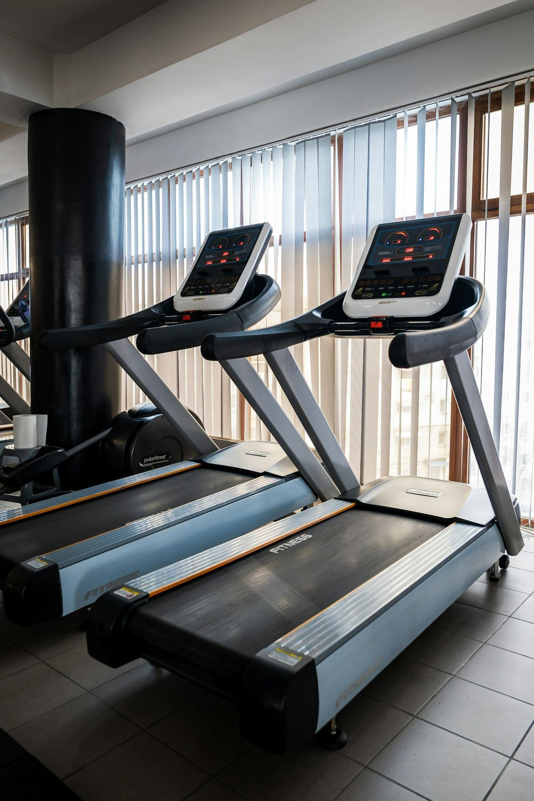

Buying checklist
Walking Pad vs Treadmill: Which Fits Your Home?

This guide contains affiliate links. If you buy through them, Holistic Life may earn a small commission at no extra cost to you. How we use affiliate links.
Quick answer
- A walking pad is slim and made for walking. A treadmill is larger and built for faster speeds and running.
- Pick a pad for desk walking and tight spaces. Pick a treadmill if you want to run or use an incline.
- Think about space, floors, neighbors and whether you will use it at a desk.
- Sales come and go, but these questions stay the same.
A walking pad and a treadmill both give you a moving belt, so they can look like the same thing. In practice they suit different homes and different goals. This guide compares them fairly, so you can choose the one you will actually use.
This is a nurse-run site, and the guide names no brands or models, because those change often. Sales come and go, and the questions below do not.
The CDC says adults need at least 150 minutes of moderate-intensity activity each week, and it gives brisk walking as an example. Either machine can help you fit that in around weather and a busy day.
What each one is
A walking pad is a slim, flat belt made for walking, often at a slow or moderate pace. Many have no handrail, and many fold or slide under furniture.
A treadmill is a larger machine with a longer deck, a motor made for higher speeds and usually handrails and a console. Some fold up for storage.
Side by side
| Walking pad | Treadmill | |
|---|---|---|
| Space | Small footprint, low profile | Larger footprint and taller |
| Storage | Slides under a bed or couch | Folds up, or stays out |
| Speed range | Slow to moderate, mostly walking | Wider range, built for running |
| Incline | Often flat, some have a small incline | More models offer incline |
| Running | Usually not recommended | Made for it, check the rated speed |
| Noise | Often quieter at walking speed | Can be louder at higher speeds |
| Setup | Light, often ready quickly | Heavier, may need assembly |
| Best for | Desk walking and small homes | Runners and a full cardio routine |
Specs vary by model, so read each listing and treat this table as a general guide.
Pick a walking pad if...
- You mainly want to walk, at a desk or in front of a show.
- Space is tight and you need to tuck it away.
- You want a slow, steady pace you can keep up for a while.
- You live in an apartment and want to keep noise low.
Pick a treadmill if...
- You want to jog or run, now or later.
- You like to walk fast or on an incline.
- You want handrails for balance and a bigger deck.
- You have a spare corner or room where it can stay out.
Questions to ask yourself
- Do I want to run? If yes, a treadmill is the safer match. A pad made for walking is not meant for running.
- Where will it live? Measure the spot, the gap under furniture and the path to get it there. If you cannot move it alone, it may stay in the way.
- What is under the floor? Thin floors and upstairs rooms carry sound and vibration. A mat underneath helps.
- Will neighbors hear it? If someone lives below or next door, read reviews that mention noise, floors and neighbors before you choose.
- Will it go under a desk? A pad paired with a standing desk or riser works well for calls and email. Typing can feel harder at first, so give yourself a few weeks to adjust.
Walking pad
A slim, flat belt that slides under a couch or bed. It suits people who want to walk at a desk or in front of a show.
What to look for
- A weight limit above the user's weight, with room to spare
- A slow minimum speed and a simple remote
- An auto-stop safety feature
See walking pads on Amazon (paid link)
Folding treadmill
A full-size deck that folds up when you are done. It is a fit for people who want to run, use an incline or walk fast.
What to look for
- A deck long enough for your stride
- Handrails and a safety key
- A fold that is easy to do alone
See folding treadmills on Amazon (paid link)
Equipment mat
A mat protects floors, steadies the machine and softens vibration and noise, which matters in an apartment.
What to look for
- A size larger than the machine
- A dense, non-slip surface
- A material that does not stain floors
See equipment mats on Amazon (paid link)
Standing desk
Desk walking works best when the desk is at the right height. A height-adjustable desk or riser lets you set it up properly.
What to look for
- A height range that suits you while standing
- A sturdy base with little wobble
- Space for a laptop and a keyboard
See standing desks on Amazon (paid link)
Safety basics
- Auto-stop. Look for a safety key or an automatic stop that cuts the belt if you step off.
- Handrails. Handrails can help if you feel unsteady. Some pads have a folding handle, and treadmills usually have fixed rails.
- Start slowly. Step on with the belt stopped, begin at the slowest speed and keep your first walks short. Add time over several weeks. For a gentle plan to follow, see our beginner walking plan.
- Keep the area clear. Tuck cables away and keep children and pets off the belt.
Who should check with a clinician first
Talk with your doctor or another clinician before you start if you have balance problems or dizziness, a recent injury or surgery, joint pain, or a heart, lung or other health condition that affects exercise. They can advise on a pace that suits you.
Before you order
Write down your floor type, the space you have and whether you want to run. Then use our walking pad buying checklist to check the details of any model. Buying for someone else? Our gifts for people who love to walk has smaller ideas.
Frequently asked questions
Can I run on a walking pad?
Most are made for walking only. If you want to jog, check the top speed and the maker's guidance, or choose a treadmill built for running.
Which is easier to store?
A walking pad usually wins, since it is flat and light enough to slide under furniture. Many folding treadmills fold up but still take more room and are heavier to move.
Sources
Save this guide for later
Tap a pin to save it to your Pinterest boards.